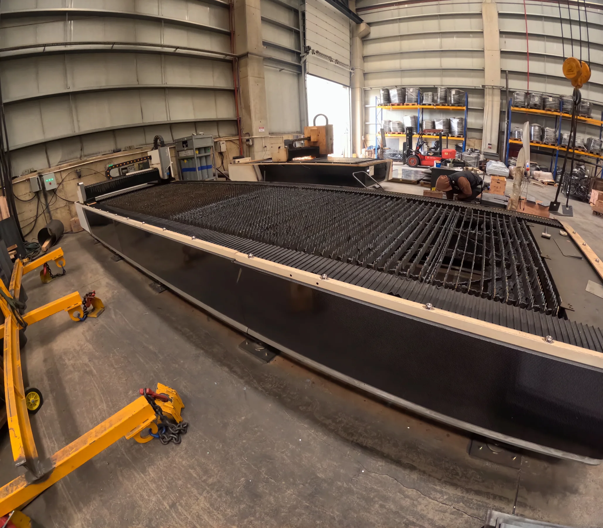
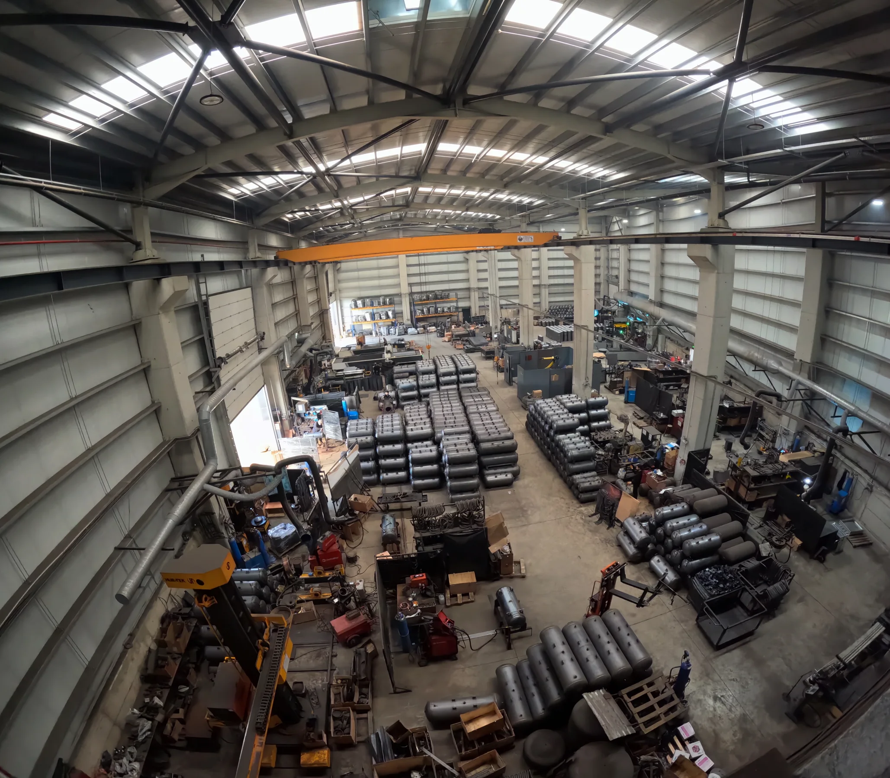
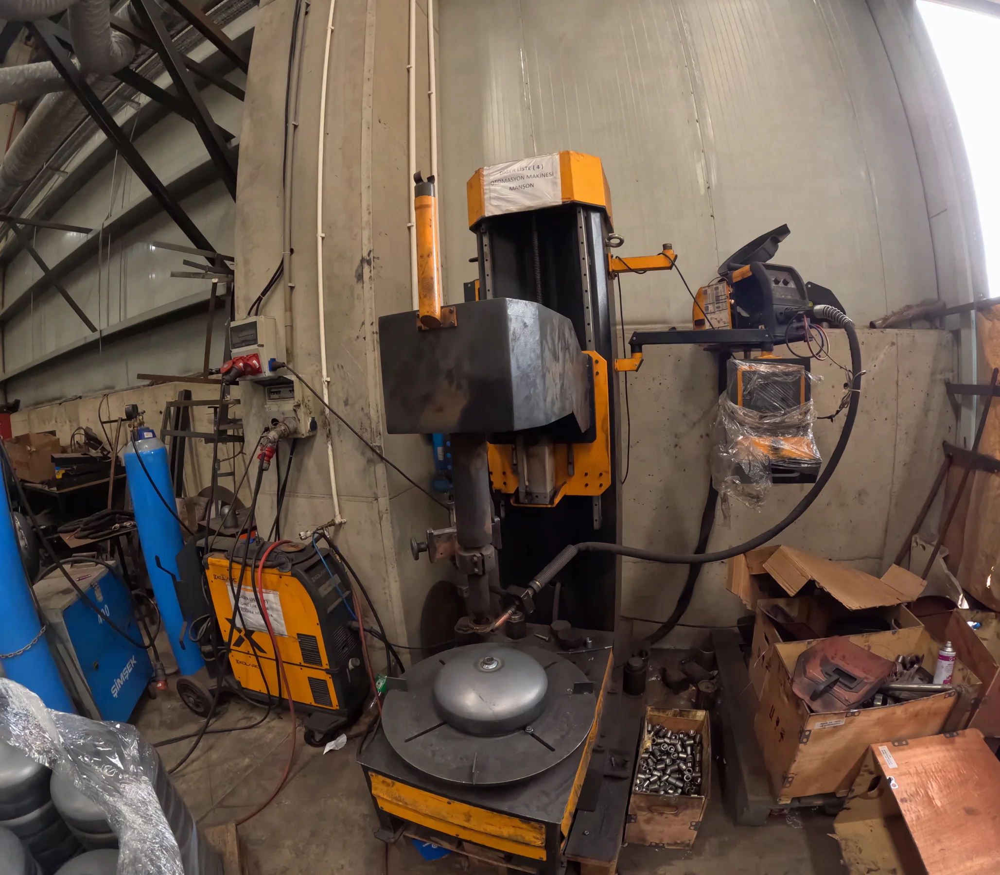
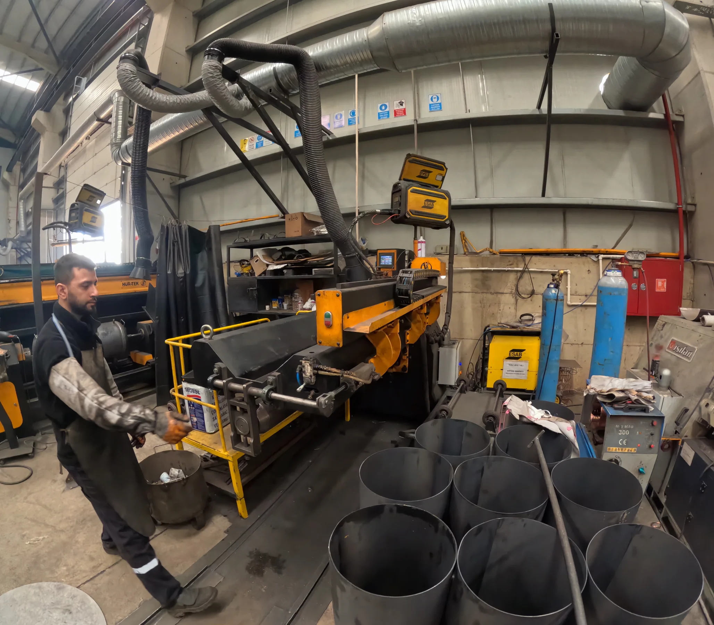
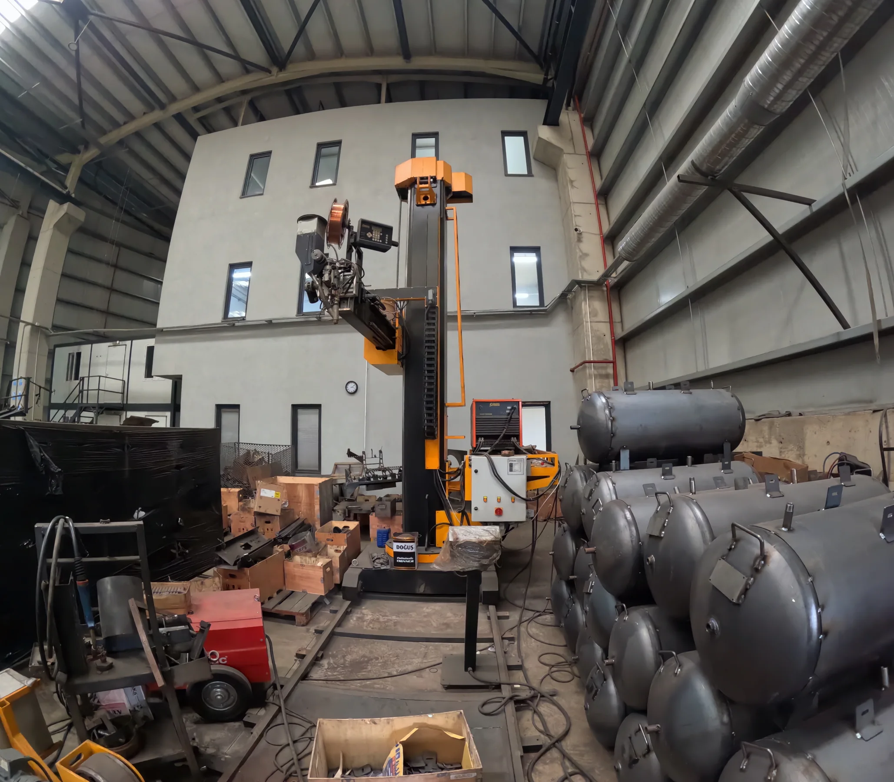
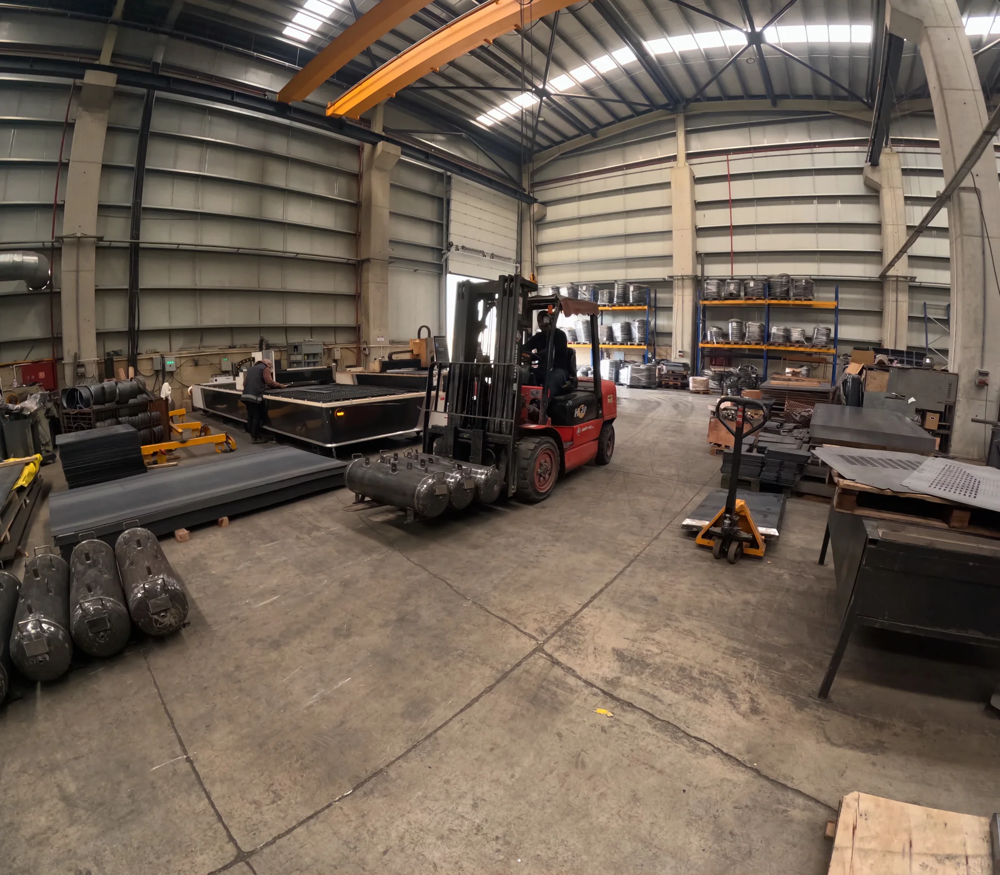
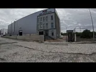
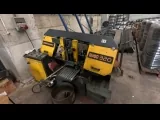
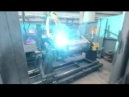
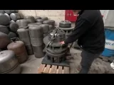

01 / FORMINGVESSEL FABRICATION
Forming & rolling
Large-format forming equipment and tank shells on the workshop floor.
A first-hand look at the people, equipment and production environment behind our pressure-vessel manufacturing.
Explore our capabilities
Our factory footage documents a working production environment for pressure-vessel equipment: sheet and vessel forming, welding activity, component handling, and assembled tank bodies within the workshop.
Equipment and operations visible in the supplied factory record.

01 / FORMINGLarge-format forming equipment and tank shells on the workshop floor.

02 / JOININGWelding equipment and active fabrication work areas.

03 / ASSEMBLYPeople, equipment and vessel components brought together at the station.

04 / OUTPUTFormed vessel bodies staged across the production area.

05 / FACILITYWorkshop scale, overhead handling and multiple fabrication zones in view.
The supplied footage captures distinct stages and equipment. These panels describe visible activity, not a certified process map.

Material and parts arranged for fabrication.

Cutting and forming equipment on the production floor.

Welding and vessel fabrication in progress.

Components handled and brought together at the station.
Material handling, forming equipment, welding stations and vessel staging are all present within the documented facility. The footage offers a practical view of how production is set up on the ground.
Selected factory clips from the supplied GoPro footage. Play a preview to inspect recorded activity and equipment.
Joining activity on the shop floor
Metal cutting operation on the shop floor
Two selected low-resolution GoPro preview clips are included for web playback. Original camera recordings remain in the source folder and are not part of this website package.
Download photo evidence ↗Capability media is one part of a strong tender submission. Pair this factory record with project-specific capacity, inspection, quality and compliance documents for the full picture.
Contact PAX Makina COMPANY CONTACT — VERIFY BEFORE SUBMISSION